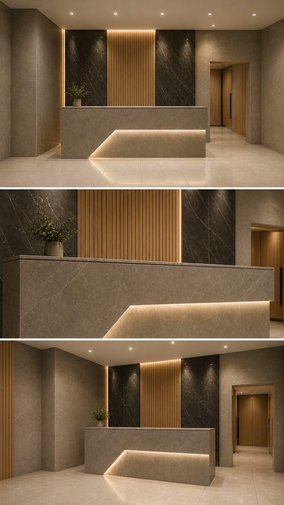
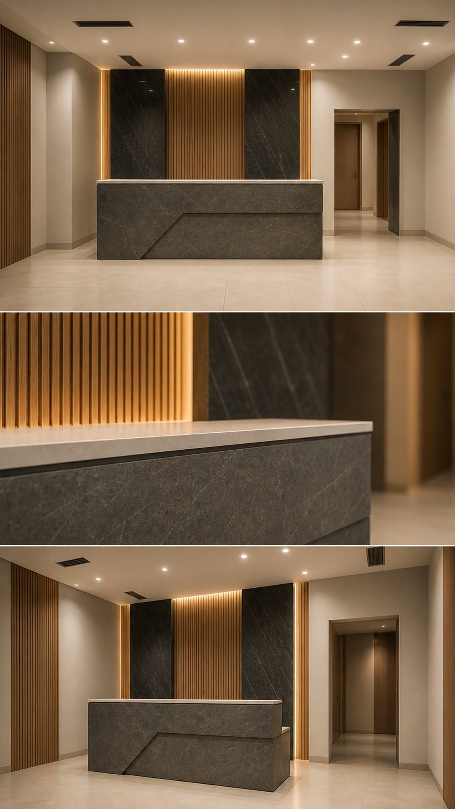
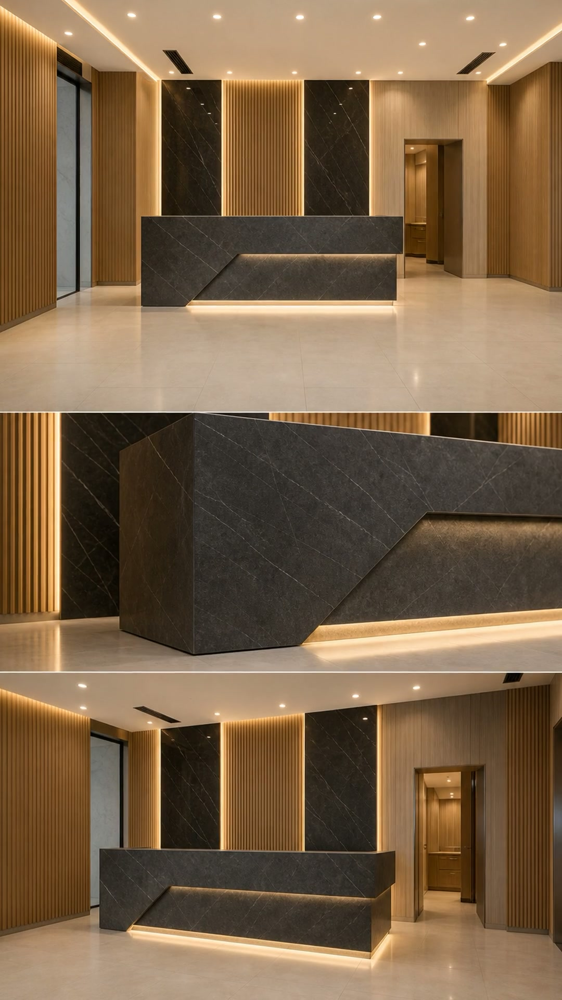
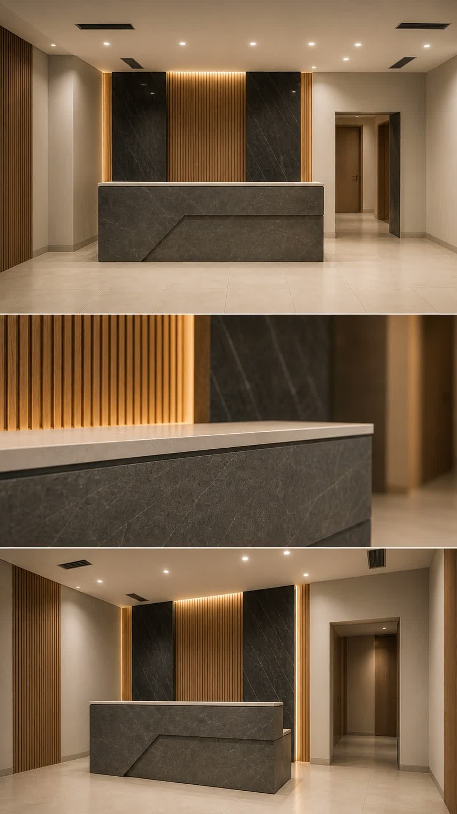

Не хватает зуба или уже сложно нормально жевать
Потеря даже одного зуба со временем влияет на прикус, жевательную нагрузку и внешний вид улыбки. Чем раньше понятен план восстановления, тем лучше прогноз.
Если нужен один имплант, восстановление всей челюсти или полная реабилитация, здесь вам предложат не «что-нибудь», а конкретный протокол под вашу клиническую ситуацию. После консультации вы понимаете, что делать, сколько это займёт и какой бюджет нужен.
Разбираем ситуацию по делу: что можно восстановить, какой протокол подходит и где не стоит переплачивать за лишнее лечение.
Потеря даже одного зуба со временем влияет на прикус, жевательную нагрузку и внешний вид улыбки. Чем раньше понятен план восстановления, тем лучше прогноз.
По описанию в интернете это не выбрать. Нужна диагностика и врач, который объяснит разницу простыми словами, без давления и лишних услуг.
Поэтому важны точная диагностика, прозрачная стоимость, сильный хирургический блок и возможность пройти лечение под седацией или во сне.
Подбираем протокол лечения по клинической ситуации, объёму восстановления и ожидаемому результату.
Когда нужно восстановить один зуб без компромиссов по эстетике и функции.
Быстрое и практичное решение для полной челюсти на четырёх имплантах.
Более стабильный протокол для сложных случаев и высокого функционального запроса.
Лечение проводят хирурги, имплантологи и ортопеды с большим практическим опытом и сильной подготовкой по сложным клиническим случаям.

Врач стоматолог-хирург, имплантолог, ортопед. Сильный профиль по имплантации, костной пластике и протезированию на имплантах.

Специализация: All on 4, All on 6, полная реабилитация и сложные хирургические случаи с высоким клиническим запросом.

Фокус на классической имплантации, немедленной нагрузке и операциях All on 4 / All on 6, где важны скорость и точность результата.
Показываем реальные примеры восстановления зубов и полной реабилитации у пациентов с разными задачами.

Восстановление улыбки и жевательной функции при полном отсутствии зубов.

Быстрое решение для полной челюсти с понятным сроком и эстетическим результатом.

Устойчивое решение для сложных случаев и более высокой жевательной нагрузки.
После консультации у вас будет конкретика: какой протокол подходит, сколько этапов предстоит, сколько это может стоить и с чего лучше начать.
Сочетаем точную диагностику, опыт врачей и понятную организацию лечения — от первого визита до финального результата.
Используем современные методы анестезии, седацию и наркоз, если пациент тревожится или планируется объёмное хирургическое вмешательство.
Ничего не делаем вслепую. Каждое решение опирается на диагностику, клиническую картину и понятный ортопедический результат.
В лечении участвуют врачи с сильным опытом в имплантации, костной пластике, полной реабилитации и протоколах All-on-4 / All-on-6.
Пациент получает ясный план, этапность, сроки и финансовый ориентир, а не размытые обещания без конкретики.
Подходит пациентам, которые переживают перед лечением, боятся боли или хотят пройти хирургический этап спокойно и комфортно.
Имплантация и восстановление зубов без лишнего стресса. Подберём комфортный формат лечения, от мягкой седации до наркоза.
Точная стоимость определяется после диагностики, но основные ориентиры по популярным протоколам можно увидеть уже сейчас.
от 29 000 ₽
Стартовый ориентир для восстановления одного зуба с индивидуальной диагностикой и планом лечения.
от 160 000 ₽
Практичный протокол для полной челюсти на четырёх имплантах с быстрой ортопедической частью.
от 250 000 ₽
Более стабильный и надёжный вариант при сложных случаях и высоком функциональном запросе.
Пошагово объясняем маршрут пациента — от диагностики до установки постоянной конструкции.
Перед лечением важно оценить объём кости, прикус, общее состояние полости рта и подобрать безопасный протокол.
Пациенту нужны ясные этапы лечения, сроки, стоимость и понимание, какой результат можно получить в его случае.
Для многих пациентов решающими становятся спокойное сопровождение, понятные объяснения врача и уверенность в результате.
«Помог окончательно определиться с лечением врач Бессонов Игорь Константинович. Изменил в лучшую сторону моё отношение к стоматологии. Спасибо, рекомендую.»
Пациент 32 Дент«Я очень рада, что доверила своё здоровье Серегину Сергею Сергеевичу. Удаление зубов и установка имплантов прошли без осложнений, всё прозрачно и понятно.»
Пациент 32 Дент«Непревзойдённый профессионализм докторов клиники помог в непростом лечении зубов и протезировании, а также преодолении психологического страха перед стоматологией.»
Пациент 32 ДентСобрали вопросы, которые пациенты чаще всего задают перед имплантацией и полной реабилитацией.
В большинстве случаев лечение проходит комфортно за счёт современной анестезии. Для тревожных пациентов доступны седация и наркоз.
Это определяется после диагностики. Врач оценивает объём кости, нагрузку, клиническую ситуацию и подбирает оптимальный протокол.
Да, в ряде случаев возможны протоколы быстрой реабилитации, включая временное протезирование в короткие сроки.
Да, предусмотрены варианты седации и лечения под наркозом для комфортного прохождения хирургических этапов.




Оставьте заявку, и мы поможем понять, какой вариант подойдёт именно вам: одиночная имплантация, All-on-4, All-on-6 или полная реабилитация под ключ.
Оставьте контакты, и мы свяжемся с вами, чтобы оценить вашу ситуацию, предложить подходящий протокол и сориентировать по срокам и бюджету.